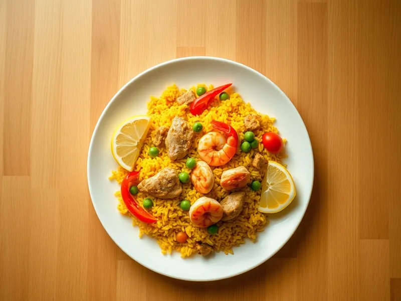

Фото: Иллюстрация ИИ, Cloudflare Workers AI
Паэлья с курицей и креветками
Испанский рис с курицей, креветками, перцем и горошком, окрашенный куркумой
35 мин4 порц.615 ккал на порциюБ 37 · Ж 25 · У 63Средиземноморская кухня
Продукты на 4 порц.
- Рис1,5 стак.
- Куриные бёдра3,5 шт
- Креветки250 г
- Перец болгарский1 шт
- Помидоры1 шт
- Зелёный горошек100 г
- Чеснок2 зуб.
- Оливковое масло2,5 ст. л.
- Куркума1 ч. л.
- Паприка1 ч. л.
- Вода3,5 стак.
- Соль2 ч. л.
- Лимон по желанию0,5 шт
Как готовить
- Нарежьте бёдра без кожи и кости кусочками 3 см, перец полосками, помидор мелкими кубиками, чеснок мелко. Поставьте греться воду.
- В широкой сковороде разогрейте масло на сильном огне и обжарьте курицу 5 минут до румяной корочки. Добавьте перец и чеснок, жарьте 2 минуты.
- Добавьте помидор, паприку и куркуму, перемешайте 1 минуту. Всыпьте сухой рис и перемешайте, чтобы каждое зерно покрылось маслом.
- Влейте горячую воду, посолите, разровняйте рис и варите на среднем огне 10 минут, больше не перемешивая.
- Вдавите в рис креветки и разложите горошек, убавьте огонь до слабого и готовьте ещё 8 минут, пока вода не впитается, а креветки не станут розовыми.
- Снимите с огня, накройте полотенцем на 3 минуты и подавайте с дольками лимона.
Совет. После того как налили воду, рис в паэлье не мешают: так зёрна остаются целыми, а снизу появляется вкусная корочка.